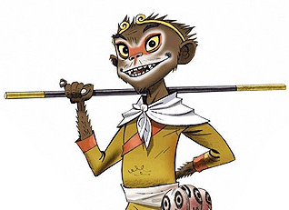
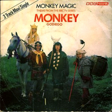
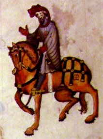
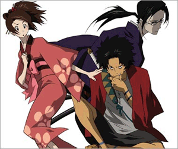
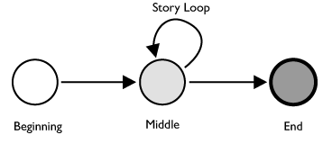
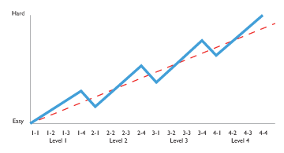

In the 01590s, the book Journey to the West was published. It is now rated as one of the four great literary works of China. The book is more commonly known by its English translation name of “Monkey” or from the BBC TV Series “Monkey”. The story focuses mostly on the Stone Monkey, also referred to as The Great Sage, Equal to Heaven. He comes from a stone egg, born by Earth, becomes immortal and causes plenty of problems with the gods. They ban and lock him under a mountain until he finds spirituality and repents. To help him repent, he must go on a pilgrimage across China to India to collect holy scrolls. He becomes the disciple of a Buddhist priest, Tripitaka and collects two other fellow disciples along the way. They are a pig spirit aptly called Pigsy and water spirit called Sandy, both were also banned from heaven for misconducts.
The story structure is very interesting. Leaving the actual content aside, it’s a perfect example of the travelers story and follows all 7 stages of a mythic adventure.
What interests me the most is that the structure of the story can be broken down into three major parts, the beginning, middle and end. That sounds pretty straight forward like any other book, but the middle section is the linchpin to its uniqueness. The book, Journey to the West, it is actually 100 chapters, most of which are small stories in themselves. This concept of the setup at the start and the end goal are just like every story, but the middle part in between has a flexible length and can go from 3 stories to 300!
This fits very well with concepts of oral tradition. As everyone is gathered around the fire, the narrator tells the story. They can quickly setup the story’s common beginning and explain the end goals. It is obvious to the listeners who is the hero and protagonist. If there are only a few hours to fill, the storyteller can quickly go through a few chapters in the middle and wrap it up nicely. If the story needs to last a few days, the exact same story can be told, but more and more sub-stories can be put into the middle. It is a nice looping structure that can repeat as long as it needed to fill time.
The four characters in Journey to the West are all Buddhists and therefore never accepted any gifts, money or other accouterments along the way. This makes it even easier to tell the middle bits out of order or invent new ones off the cuff, because very little in the last story depends on any preceding it and any later story doesn’t require previous knowledge.
Similar Stories
There are plenty of other stories that are either multiple smaller stories, travelers’ tales or similar subject matter, but none quite fit the same structure as Journey to the West.
1,001 Arabian Nights is a set of stories that has the capability to just go on and on depending on your needs, but it is different than Journey to the West, in that the 1,001 Arabian Nights are not always the same characters. From Ali Baba and his forty thieves to Sinbad and his ship, the One thousand and One nights is a collection of stories with different characters and situations. Much like Journey to the West, you can make 1,001 Arabian Nights be as abridged or robust as needed, but it is a collection of stories rather than one tale.
Canterbury Tales is another travelers’ tale style work, similar to Journey to the West. There are several characters, each telling a small story about themselves, but, because none of the stories are interlinked, they too can be told out of sequence or some omitted and everything still makes sense. There is a definitive beginning, middle and end with Canterbury Tales, but it differs in that the sub-stories in the middle are independent from each other. The cook’s tale doesn’t involve the knight’s or the wife’s chapters. In Journey to the West, they are the same characters getting into different scenarios each time. The characters are the running thread rather than the journey or destination.
One story that does parallel Journey to the West is The Wonderful Wizard of Oz. Written in 01900 there are many similarities, but also many differences. In the story of the Wonderful Wizard of Oz, Dorthy is lost and is travelling to Oz to get help. In Journey to the West, Tripitaka is journeying across China to India to fetch some scrolls to help the Chinese people gain salvation. Along the way, both Dorthy and Tripitaka collect a few followers. Each specializing in something specific as well as having deficiencies and failings. All of these new followers are also joining the journey to get help from the more powerful deity at the destination. In Journey to the West, the disciples are seeking enlightenment, in The Wonderful Wizard of Oz, they are seeking courage, a brain, a heart and a way back to Kansas.
The original L. Frank Baum story is different than the stage and movie adaptations. In his story, Dorthy and her team go through several more trials before getting to Oz and then home again. This could easily be adapted into a similar structure as Journey to the West. As Dorthy and her team wander towards Oz, she encounters several different enemies. From the wicked witch, to an evil forest, to flying monkeys, this is where the looping structure can be put into place. She can continuously run into many more sub-stories and puzzles before getting to Oz. Since this was a children’s book, I can understand why you wouldn’t want to deprive Dorthy the ability to get home. It took Tripitaka 14 years to get to India, I doubt Dorthy’s yellow brick road trip would be as welcoming if she doubled in age in her attempt to get back to her family.
Another story that does have a similar middle looping structure is Samurai Champloo. It follows a this story structure as Journey to the West. It is set in the Edo period of Japan, which began shortly after Journey to the West was written. Samurai Champloo is part of the Chanbara style, which became popular post WWII, just like the English Translation of “Monkey”.
The story contains the familiar setup and a goal, but what happens inbetween is very open. This might be a coincidence or an artifact of the style of storytelling about that era. Again, we see the helpless main character accompanied by some helpers who have their own troubles, but are indebted to the main character and take the journey because of it. In Samurai Champloo, the main character is a girl named Fuu who saves the lives of two trouble makers. They repay her by escorting her on a journey to find the Samurai who smells of sunflowers.
Ever-Looping Framework
You can probably think of several other specific stories that fit this framework. Once you realize its power, you can see how other books and stories can be molded into this open-ended middle format. The travelers’ tale sets up the ability to have a variable length middle without sacrificing the story. It also allows for plenty of other people to insert stories into that timeline. Fan fiction, new characters that come and go, etc. all are possible in this middle segment where it enters into a loop, constantly repeating this fraction of the over all tale. When the narrator wants to jump out of this loop to the end, a well written story makes it possible to do at any time.
Another space where good story telling is key is in video games. This chart is a simple mock-up of an example of a story in a video game. As you move along the horizontal axis you are increasing in levels. The vertical axis is the difficulty. You would expect to follow the dashed line. The game gets progressively harder at a steady rate as you progress. Actually, the story dictates a different design. As you approach the end of each level it gets more difficult. Upon completion, you drop back down below the expected slope.
What would a video game look like if it used this same infinite looping structure in the levels? It might mean that as you move from one level to the next it doesn’t matter. You can try to go from level 1 to level 8 by only playing 1 or 2 levels in between. Conversely, you could play every single one. As a structure to select “easy”, “normal” or “difficult” you might get more or less levels in the middle loop. Maybe the more levels you play, the more experience you earn and learn all the little tricks and get more practice. It makes the slog longer and harder, but you get more out of the game because of it. Which conversely would mean as you got to level 8, it would be easier in hard mode, due to your experience. Jumping in easy mode from level 1 to level 8 means it is shorter, but the difficultly gap between those two levels might make it seem impossible.
Games like Guitar Hero, Dance Dance Revolution or PaRappa the Rappa pushed you along at your pace. Pokémon is another example where the universe of pocket monsters could have endless “monsters in the middle”. All of these games have an end goal and a beginning, but how you navigate and how fast you get through the middle section are very open to the time you can invest and your abilities. This makes for very interesting and flexible game design.
Just like the travelers’ journey: the goal is less about the destination and more about learning about yourself during the trip.